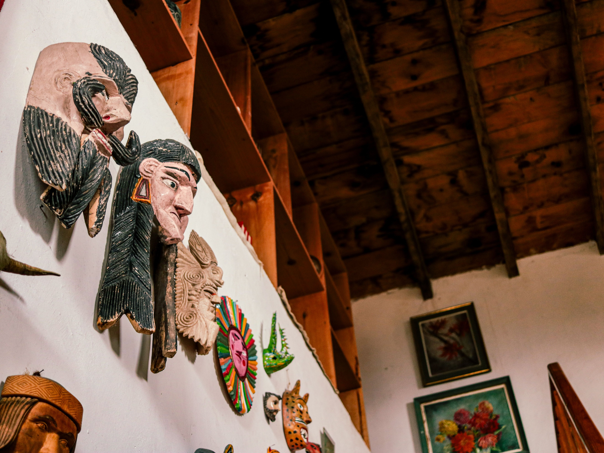
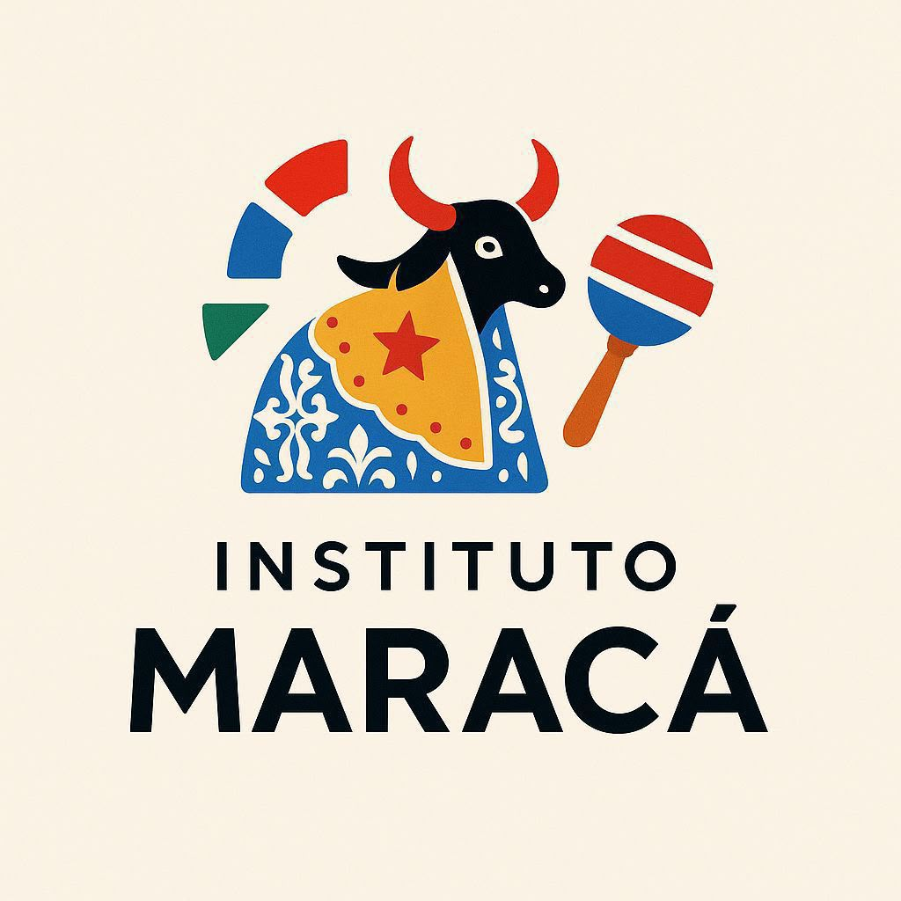
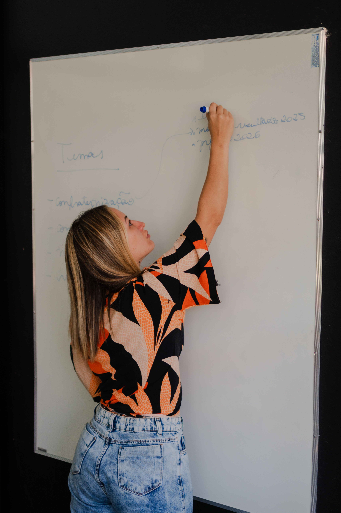
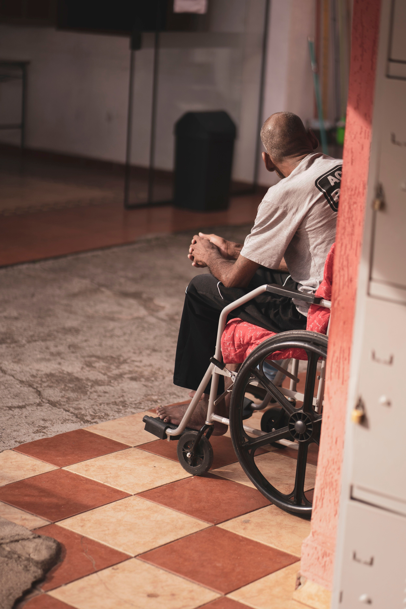
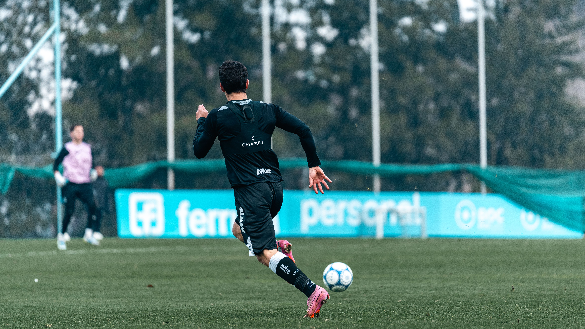
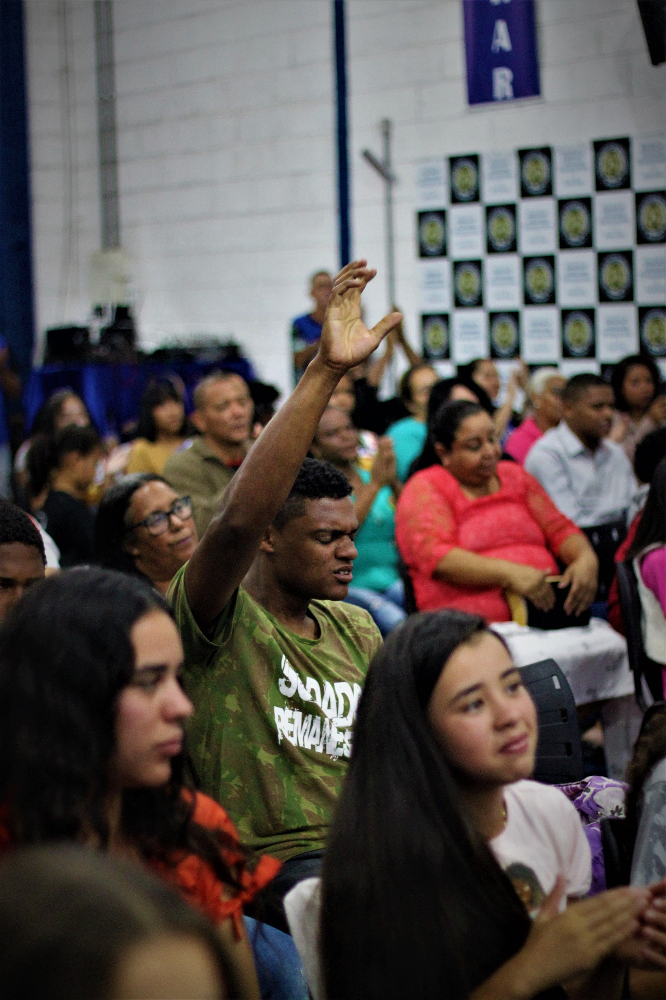
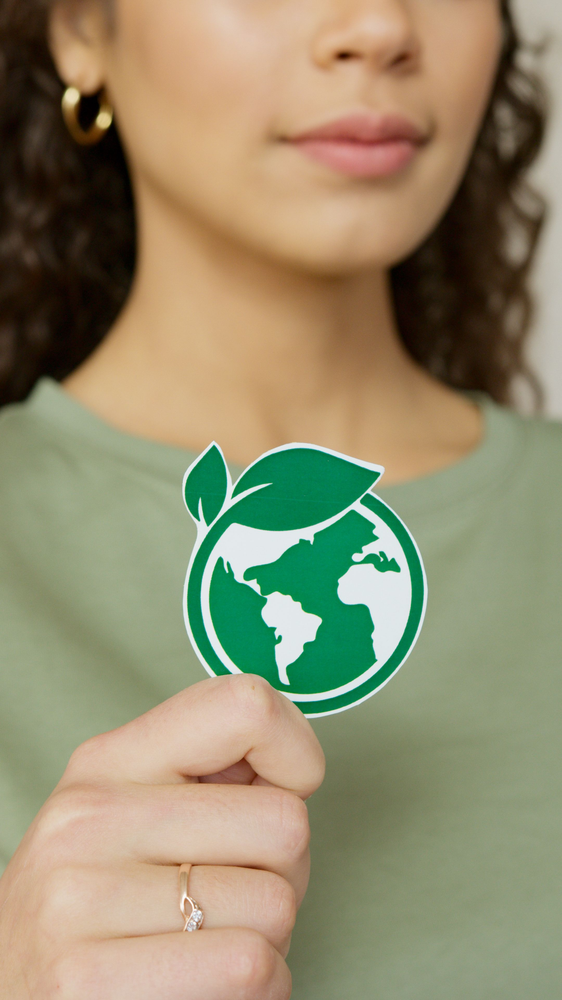

Cultura e Arte
Fomento a projetos, festivais, mostras e oficinas, incentivando a circulação cultural, a valorização das manifestações populares e o resgate da memória e identidade local.

Gestão empresarial, recursos humanos e eventos, com atuação direta no suporte educacional, capacitação profissional, saúde coletiva e apoio à produção florestal.
Acreditamos que a cultura, a educação e o esporte são as chaves mestras para transformar realidades e construir uma sociedade mais justa. Nascido em 2013 em São Luís do Maranhão, o Instituto Socio Cultural Maracá cria pontes entre pessoas, comunidades e parceiros para valorizar saberes locais e abrir novos caminhos de desenvolvimento humano. Por meio de ações integradas em cultura, formação profissional, meio ambiente e assistência social, trabalhamos lado a lado com a nossa gente para gerar impacto real, preservar identidades e multiplicar oportunidades.
Conheça os campos em que o Instituto Maracá desenvolve suas iniciativas.

Fomento a projetos, festivais, mostras e oficinas, incentivando a circulação cultural, a valorização das manifestações populares e o resgate da memória e identidade local.

Desenvolvimento de ações complementares ao ensino, com foco em capacitações pedagógicas, qualificação profissional prática e desenvolvimento de competências gerenciais.

Programas de convivência e cidadania voltados ao fortalecimento de vínculos familiares e comunitários, oferecendo suporte contínuo a públicos em vulnerabilidade social.

Ensino e práticas esportivas integradas, utilizando o esporte como ferramenta ativa de promoção à saúde, disciplina, integração comunitária e inclusão de jovens e adultos.

Planejamento, apoio e realização de feiras, congressos, exposições e celebrações populares, gerando engajamento comunitário e troca de experiências.
Desenvolvimento de pesquisas sociais e apoio técnico a projetos, englobando consultoria em gestão empresarial, estruturação de processos e suporte à administração em saúde.

Iniciativas de conscientização e educação ecológica, apoiando a produção sustentável, preservação florestal e adoção de práticas ambientalmente responsáveis.

TERMO DE FOMENTO: N. 278/2066 - SECMA

TERMO DE FOMENTO: Nº. 733/2025 - SECMA

TERMO DE FOMENTO: N. 278/2066 - SECMA
Transformação social através da cultura, educação e cidadania: atuamos no fortalecimento comunitário por meio de formação profissional, inclusão social, incentivo ao esporte, promoção ambiental e articulação de redes e eventos integrados.
Fale com o Instituto Maracá e conheça nossas iniciativas.
(98) 98284-4805
institutoguarnice@gmail.com
AV rei de frança, 200, sala 11, Ed, São Luís center
@insti.maraca
© 2013 Instituto Maracá · Projetos Sociais, Culturais e Corporativos.